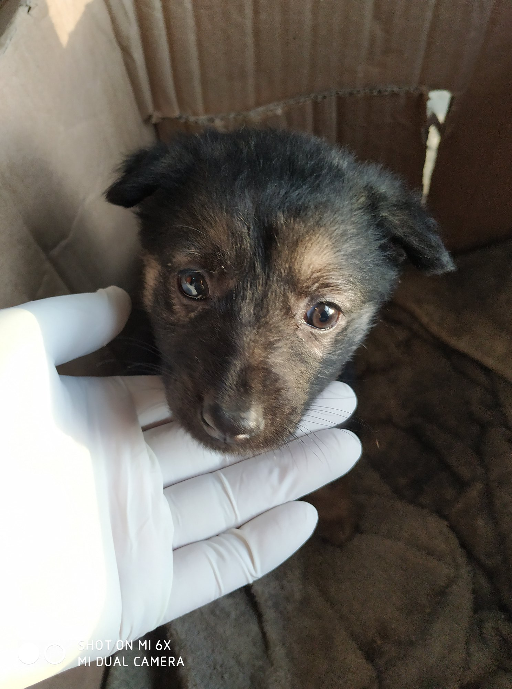

Notfall – wenn etwas mit deinem Tier nicht stimmt
Im Zweifel gilt immer: Lieber einmal zu oft zum Tierarzt als einmal zu wenig.

Ruhig bleiben. Anrufen. Hinfahren.
Bei Atemnot, Krampf, Vergiftungsverdacht, Harnstopp, Zusammenbruch oder starker Blutung ist das kein Recherche-Moment. Tierarzt oder Tierklinik anrufen, Transport vorbereiten, Verpackung oder Giftquelle mitnehmen.
Sofort zum Tierarzt – diese Symptome sind Notfälle
- Atemnot, Hecheln ohne Belastung, blaue Schleimhäute
- Bewusstlosigkeit, Krämpfe, Zusammenbrechen
- Starke Blutung, die nicht aufhört
- Verdacht auf Vergiftung (Erbrechen, Durchfall, Zittern, Speicheln, Apathie nach Kontakt mit Giftquellen)
- Verschluckte Fremdkörper (würgen, Speicheln, Unruhe)
- Aufgeblähter, harter Bauch (besonders bei Hunden: Magendrehung = lebensbedrohlich)
- Kein Urinabsatz seit 12+ Stunden (besonders bei Katern: Harnröhrenverschluss = Notfall)
- Offene Knochenbrüche
- Vögel: am Käfigboden sitzend, aufgeplustert, Augen geschlossen
Vergiftungsgefahren im Haushalt
Viele alltägliche Substanzen sind für Tiere giftig – oft ohne dass Halter es wissen.
Giftig für Hunde
- Schokolade (Theobromin) – je dunkler, desto giftiger
- Trauben und Rosinen – Nierenversagen, schon in kleinen Mengen
- Zwiebeln und Knoblauch – zerstören rote Blutkörperchen
- Xylit (Birkenzucker) – führt zu lebensbedrohlichem Insulinschock
- Avocado (Persin) – Herzmuskelschäden
- Macadamianüsse – Muskelzittern, Schwäche
- Rattengift und Schneckenkorn – tödlich, Symptome oft erst nach Stunden
- Ibuprofen und Paracetamol – kleine Mengen können tödlich sein
Giftig für Katzen
- Lilien (alle Arten) – schon der Pollenstaub kann tödliches Nierenversagen auslösen
- Teebaumöl und ätherische Öle – die Leber kann sie nicht abbauen
- Paracetamol – eine einzige Tablette kann eine Katze töten
- Zwiebeln und Knoblauch – auch in gekochter Form giftig
- Permethrin (in manchen Hunde-Flohmitteln) – für Katzen tödlich
Giftig für Vögel
- Teflon-Dämpfe (PTFE) – beim Erhitzen von beschichteten Pfannen: sofort tödlich für Vögel im selben Raum
- Avocado – tödlich
- Duftkerzen, Räucherstäbchen, Raumsprays – Atemwege extrem empfindlich
- Blei (alte Farbe, Gardinen-Gewichte, Vorhangschnüre) – Bleivergiftung
Erste Hilfe – die Basics
Sauberes Tuch auf die Wunde drücken, festen Druck ausüben. Nicht abbinden (außer bei lebensbedrohlichen Blutungen an Gliedmaßen). Sofort zum Tierarzt.
Nicht selbst Erbrechen auslösen – bei ätzenden Substanzen verschlimmert das die Verletzung. Substanz und Verpackung sichern, Tierarzt anrufen, sofort hinfahren. Wenn möglich: Zeitpunkt, Menge und Substanz notieren.
In den Schatten bringen, langsam (!) abkühlen – nasse Tücher auf Pfoten und Bauch, nicht mit Eiswasser übergießen. Wasser anbieten, aber nicht reinzwingen. Sofort zum Tierarzt – Hitzschlag kann Organe schädigen.
Ruhe bewahren. Nichts ins Maul stecken. Umgebung sichern (nichts, woran sich das Tier verletzen kann). Dauer des Anfalls merken. Nach dem Anfall: ruhig ansprechen, nicht bedrängen. Bei einem Anfall über 3 Minuten oder wiederholten Anfällen: Notfall, sofort zum Tierarzt.
Tierärztlichen Notdienst finden
Außerhalb der Sprechzeiten: Den nächsten tierärztlichen Notdienst findest du über die Tierärztekammer deines Bundeslandes oder über die Notrufnummer deiner Tierklinik. Viele Regionen haben rotierende Notdienste – informiere dich vorher, nicht erst im Notfall.
Tipp: Speichere die Nummer deines Tierarztes und der nächsten Tierklinik mit Notdienst jetzt in deinem Handy. Im Notfall ist keine Zeit zum Suchen.
Diese Seite ersetzt keinen Tierarzt
Alle Informationen hier dienen der Ersteinschätzung. Sie ersetzen nicht die Diagnose und Behandlung durch eine Tierärztin oder einen Tierarzt. Im Zweifel: anrufen, hinfahren, untersuchen lassen.